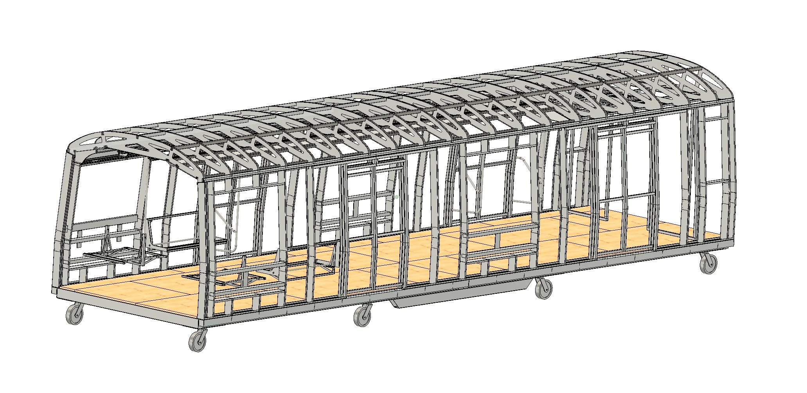
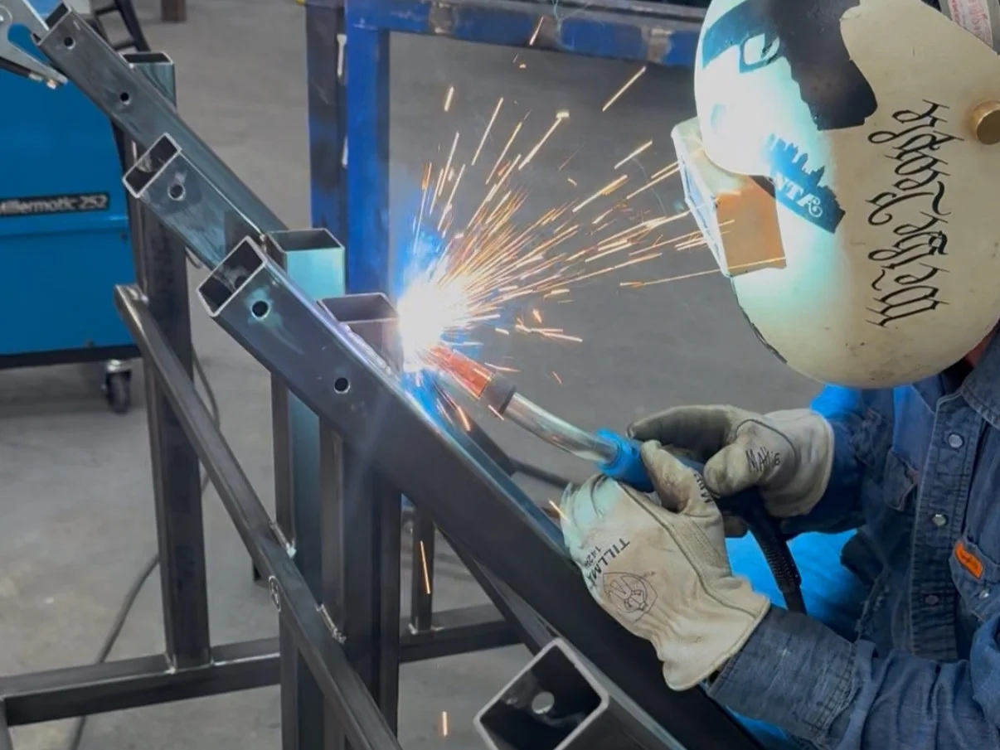
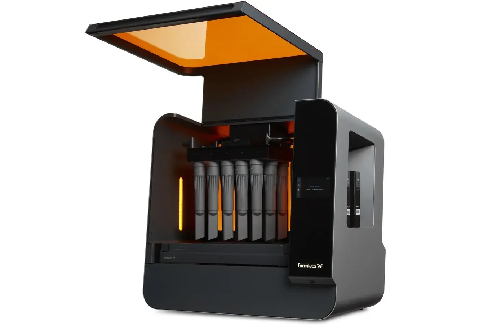
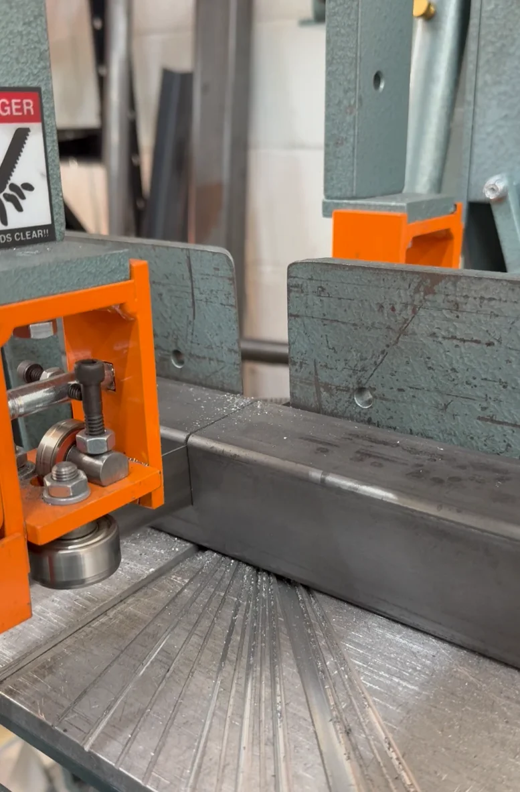
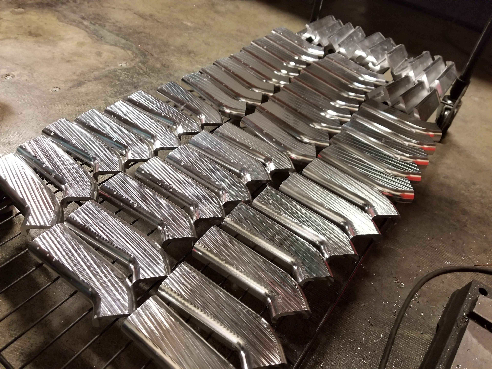
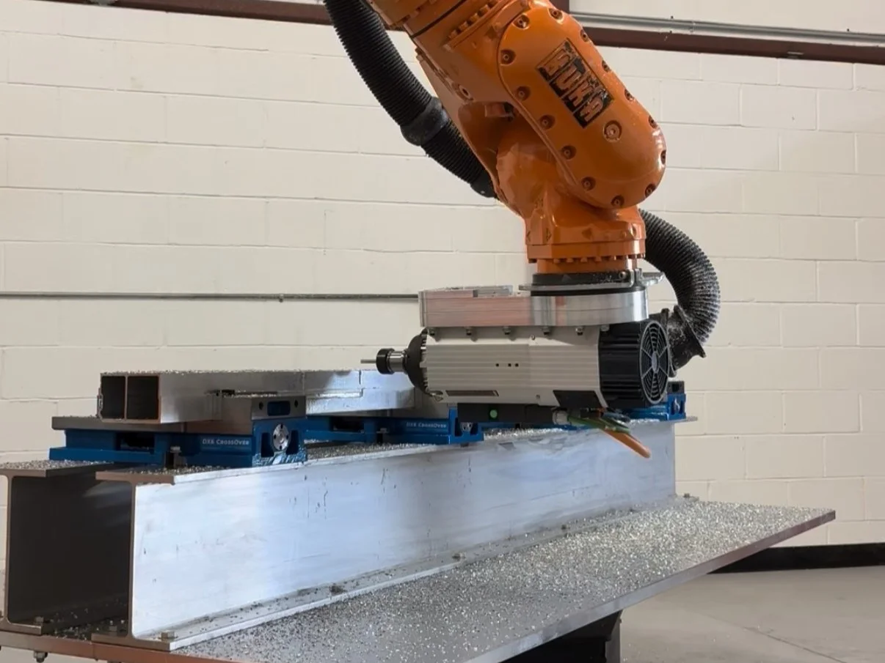
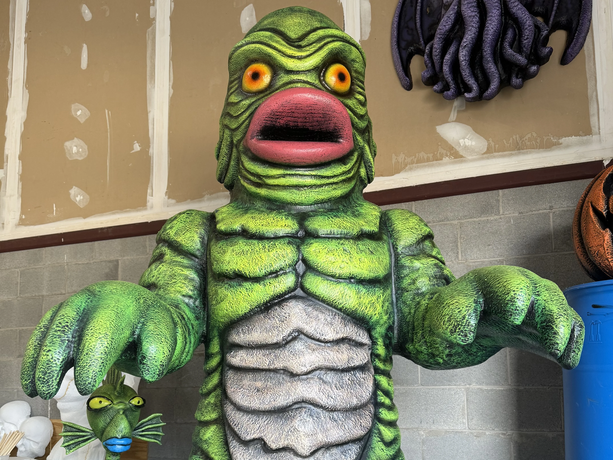
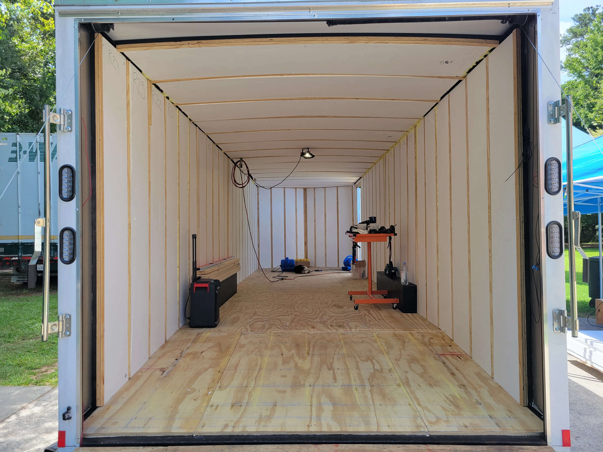
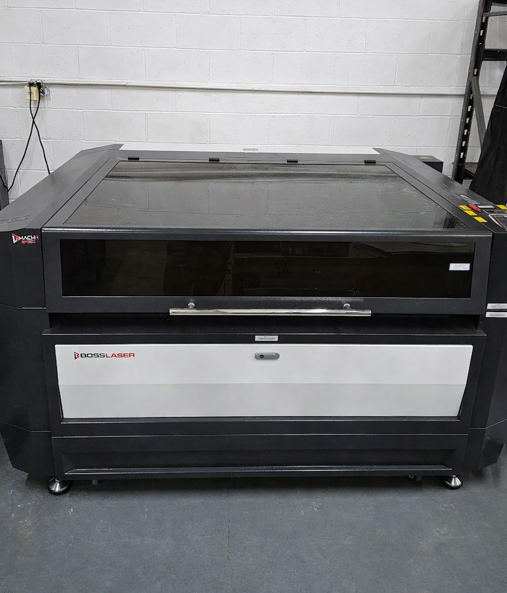
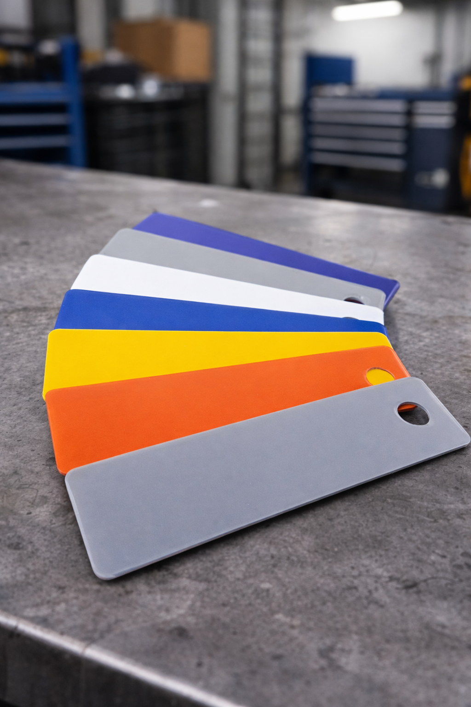

Core Services
Comprehensive fabrication services from concept to completion, backed by advanced technology and decades of expertise.

Design, Product Development & Prototyping
Turning concepts into manufacturable, production-ready solutions.
- CAD modeling (Fusion 360, SolidWorks, Rhino)
- Product development & R&D
- Reverse engineering & 3D scanning
- Prototyping and design validation
- DFM/DFA optimization
- Rapid concept modeling via SLA printing
Benefits: Shorter development cycles, reduced production cost, and clear, manufacturable designs from day one.
Learn more →
Custom Metal Fabrication
Metal fabrication for industrial, commercial, automotive, aerospace, and entertainment applications.
- In-house design team
- MIG & TIG welding
- Part cutting & assembly
- Finishing & packaging
Applications: Custom metal fabrication, frames, enclosures, trailers, brackets, assemblies, structural reinforcements, precision components, and ground support equipment.
Learn more →
Additive Manufacturing (Industrial 3D Printing)
Large-format SLA printing services for production-quality parts, prototypes, and functional components using Formlabs 3L.
- Functional prototypes and parts
- Complex geometries not feasible in machining
- Wide range of materials and applications
- Design and engineering support
Applications: Product development, functional testing, tooling, medical/veterinary/dental models, trays, engineering prototypes, subassemblies, and production assemblies.
Learn more →Manufacturing Services
Precision cutting, machining, and production capabilities for projects of any scale.

Part Cutting
Wide range of cutting services for metals, plastics, and composites using advanced equipment.
- CNC plasma cutting
- Shop Sabre CNC Router
- 7-Axis robotic aluminum milling cell w/ rotary table
- Horizontal bandsaw
Use cases: Base plates, gussets, brackets, signage, component blanks, templates, subassemblies, and production parts.
Learn more →
Short Production Runs
Full end-to-end product support from design to delivery.
- Full end-to-end product support
- Design expertise and DFM/DFA optimization
- Short run and one-off production runs
- Quick turnaround and consistent results
Benefits: Quick turnaround, consistent results, and full end-to-end product support.
Learn more →
Overflow & Production Support
Production capabilities for low to mid volume manufacturing with repeatability and consistency.
- Repeatable part manufacturing
- Assembly and sub-assembly builds
- Prototyping-to-production transitions
- Hardware installation
- Overflow fabrication & design support
Specialized Services
Custom solutions for entertainment, repairs, and unique fabrication needs.

Entertainment, Props & Sculptures
Custom props, set pieces, and larger-than-life sculptures for Atlanta's rapidly growing film and TV industry.
- Metal props, scenic elements, custom designed props
- Structural pieces and rig-ready builds
- Larger than life sculptures
- Practical effects and mechanical components
- Fast turnaround for tight production schedules
Why productions choose IDFS: Located near Trilith, Tyler Perry, and Atlanta Metro Studios. Decades of experience in the film and entertainment industry.
Learn more →
Repair Services
Professional repair services for trailers, gates, metal equipment, and industrial machinery in Fayetteville, Georgia.
- Trailer repair
- Gate repair
- Metal equipment repair
- Industrial and heavy machinery repair
- Welding repairs and structural reinforcement
Why choose IDFS for repairs: Expert welding, fabrication, and machining capabilities ensure durable, long-lasting repairs that restore your equipment to working condition.
Learn more →
Robotic Welding, Milling, and WAAM
Advanced robotic manufacturing capabilities using KUKA and Universal Robots, powered by Robotmaster, RoboDK, Mastercam, and more.
- KUKA robotic systems
- Universal Robots integration
- Robotic welding and milling
- Wire Arc Additive Manufacturing (WAAM)
- Robotmaster, RoboDK, and Mastercam programming
Technology: KUKA and Universal Robots, powered by Robotmaster, RoboDK, Mastercam, and more.
Learn more →
Laser Engraving
Precision laser engraving and marking for metal, plastic, and other materials—ideal for branding, serial numbers, and custom graphics.
- Metal and plastic engraving
- Logos, text, and barcodes
- Serial numbers and part identification
- Custom graphics and decorative marking
- Fast turnaround on small and production runs
Applications: Nameplates, product branding, traceability, signage, awards, and one-off or high-volume marking.
Learn more →
Powder Coating
Durable, professional powder coating for metal parts and assemblies—scratch-resistant finishes in a wide range of colors and textures.
- Durable, corrosion-resistant finishes
- Wide color and texture options
- Uniform coverage on complex geometries
- Environmentally friendly process
- Ideal for prototypes and production runs
Benefits: Long-lasting protection, consistent appearance, and a finish that stands up to wear and outdoor use.
Learn more →Ready to get started?
Tell us about your project, upload your files, and get a quick, accurate quote.